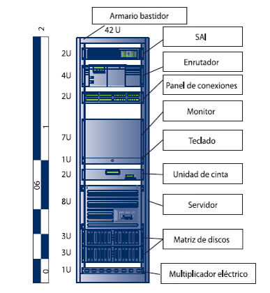
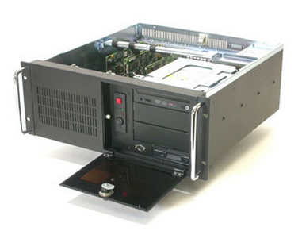

Centro de Proceso de Datos (CPD)¶
Introducción¶
Un Centro de Proceso de Datos, Centro de Datos, Centro de cálculo, Data Center ó CPD, es la ubicación (sala, edificio) o simplemente un espacio determinado en una sala) donde se concentran todos los recursos informáticos que dan soporte a una o varias organizaciones.
En la construcción de cualquier CPD, a parte de la infraestructura informática, hay que tener en cuenta otro tipo de instalaciones que permitan proporcionar una cierta tolerancia a fallos inevitables, directa o indirectamente relacionados con los dispositivos meramente informáticos. En gran parte, estas instalaciones o medidas adoptadas para proporcionar esta tolerancia a fallos se basan en la redundancia, puesto que es inevitable que cualquier dispositivo pueda fallar de manera impredecible.
El Estándar TIA 942¶
Concebido como una guía para los diseñadores e instaladores de centros de datos (Data Centers), el standar TIA-942 Standar TIA-942(2005) proporciona una serie de recomendaciones y directrices para la instalación de sus infraestructuras.
El estándar TIA942 aprobado en 2005 por ANSI-TIA (American National Standards Institute – Telecomunications Industry Association), clasifica a este tipo de centros en varios grupos, llamados TIER, indicando así su nivel de fiabilidad en función del nivel de disponibilidad.
El nivel de fiabilidad de un centro de datos viene indicado por uno de los cuatro niveles de fiabilidad llamados TIER, en función de su redundancia. A mayor número de TIER, mayor disponibilidad, y por tanto mayores costes de construcción y mantenimiento.
TIER |
%Disponibilidad |
%Parada |
Tiempo anual de parada |
|---|---|---|---|
TIER I |
99.67% |
0.33% |
28,82 horas |
TIER II |
99.74% |
0.25% |
22,68 horas |
TIER III |
99,982% |
0.02% |
1,57 horas |
TIER IV |
100,00% |
0.01% |
52,56 horas |
TIER I- Nivel 1 (Básico)
Sensible a las interrupciones, planificadas o no.
Un solo paso de corriente y distribución de aire acondicionado, sin componentes redundantes.
Puede contar o no contar con piso elevado, UPS o generador.
Generador independiente.
Debe apagarse completamente para realizar mantenimiento preventivo.
TIER II- Nivel II (Componentes redundantes)
Menor sensibilidad a las interrupciones.
Ruta única de alimentación eléctrica y enfriamiento, incluye componentes redundantes.
Cuenta con piso elevado, UPS y generador.
TIER III- Nivel III (Mantenimiento concurrente)
Interrupciones planificadas sin interrupción de funcionamiento.
Múltiples rutas de alimentación eléctrica y de enfriamiento, una sola ruta activa.
Cuenta con piso elevado.
Equipos de TI cuentan con doble alimentación eléctrica.
TIER IV- Nivel IV (Tolerante a errores)
Nivel de disponibilidad del 99.995% y 0.4 horas de interrupción anual.
Actividades planeadas o no planeadas no interrumpen los servicios.
Múltiples rutas de alimentación eléctrica y de enfriamiento, incluye componentes redundantes.
Equipos de enfriamiento cuentan con doble ruta de alimentación independiente.
Cuenta con sistemas de almacenamiento de energía
Estructura de un CPD¶
Infraestructura física¶
La iluminación
La iluminación será de un mínimo de 500 lux en el plano horizontal y 200 luxen el plano vertical, medido a 1 m por encima del piso terminado en medio de todos los pasillos entre armarios
Puertas
Las puertas deberán estar a una distancia mínima de 1 m de ancho y 2,13 m de alto, sin umbrales, bisagras para abrir hacia afuera o corredera.
Carga en suelo
La capacidad de carga del piso en la sala de informática será suficiente para asumir la carga concentrada y distribuida de los equipos instalados con cableado asociado y los medios de comunicación. La capacidad de carga del piso distribuido mínima será de 7.2 kPA (150 lb/ft2). La capacidad de carga del piso distribuido recomendado es de 12 kPA (250 lb/ft2).El piso deberá tener también un mínimo de 1,2 kPA (25 lb/ft2) capacidad para soportar cargas colgantes que se encuentran suspendidos en la parte inferior de la planta (por ejemplo, las escalas de cable suspendido del techo de la planta inferior, es recomendado el piso es de 2,4 kPA (50 lb/ft2)).
Los parámetros operativos
La temperatura y la humedad deberán ser controlados para ofrecer rangos de funcionamiento continuo de la temperatura y la humedad:
Temperatura : 20ºC a 25ºC
Humedad relativa: 40% a 55%.
Máximo: Punto de rocío de 21°C
Tasa máxima de variación: 5°C por hora.
Equipos de humidificación y deshumidificación dependiendo de las condiciones ambientales locales
La temperatura y la humedad se medirá después de que el equipo está en funcionamiento. Las mediciones deberán realizarse a una distancia de 1,5 m por encima del nivel del suelo cada 3 a 6 m a lo largo de la línea central de los pasillos fríos y en cualquier ubicación en la admisión de aire de los equipos operativos.
Doble acometida eléctrica
Es necesario que el CPD cuente con una doble acometida eléctrica ante un posible fallo eléctrico que pueda dejar sin energía a todas las instalaciones. Así, en caso de caer la red principal, se podría seguir funcionando con la auxiliar mientras la primera se repara.
Sin embargo, podría darse un corte de luz generalizado en la zona, por lo que los servidores pueden contar con dispositivos SAI (Sistemas de Alimentación Ininterrumpida). En caso de fallo eléctrico prolongado, se podría disponer de la doble acometida como ya se ha comentado anteriormente, o bien un grupo electrógeno propio que permita suministrar la energía a toda la infraestructura informática durante un cierto tiempo.
Vemos en la siguiente tabla, según el estándar TIA-942, la separación que debe tener el circuito eléctrico y el circuito de datos para minimizar las interferencias.

En el caso de que los cables no tengan apantallamiento, la distancia se duplicara. En el caso de que los cables se instalen en la misma bandeja, los cables de corriente tendrán que estar separados por la parte de abajo con una bandeja de metal con toma de tierra NEMA VE 2-2001.
Medidas contra incendios
Ya no sólo por la cantidad de material informático del que se dispone en cualquier CPD, sino por el incalculable valor de toda la información que éste puede almacenar, es necesario disponer de medidas contra incendios.
Cómo prevenir incendios en un CPD
La mejor estrategia contra incendios para CPD (centro de proceso de datos) es la prevención.
Dado que los sistemas actuales cuentan con software capaz de detectar el malfuncionamiento temprano de los equipos, es más que recomendable su implantación para evitar incendios y las paradas de producción que deriven.
Causas de incendios en un CPD
La causa de incendio más común es la electricidad, la segunda el polvo o suciedad acumulada (junto a lubricante por ejemplo de ventiladores u otras piezas móviles) y la tercera la intencionalidad.
Para evitar la causa más común (electricidad) trata de mantener las fuentes de alimentación, electrónica con alta densidad de condensadores y baterías de respaldo en el mejor «estado de forma» posible. Vamos, que reemplaces los equipos más antiguos cuando sea posible.
También procura utilizar cableado y conectores homologados, si puede ser de fabricación europea o americana y evitar a toda costa, empalmes caseros o con cinta aislante.
Por último, trata de evitar la presencia de plásticos o cartones típicos de los equipos nuevos, cuando se desembalan pero se conserva la caja original «por si acaso la garantía».
Detección contra incendios para CPD
Según la normativa actual no es necesaria. Sin embargo, dada la importancia de los datos para las empresas actuales es más que recomendable utilizar la detección software temprana, detección de humos y conectar la detección a un sitio donde se pueda recibir la alarma pronto y que no esté excesivamente lejos.
Extinción contra incendios para CPD.
Todo depende de cuanto valores los datos almacenados y de cuánto quiera tu empresa (o pueda) invertir. Lo mínimo recomendable es contar con extintores que no conduzcan la electricidad, como los extintores de CO2 (gas), de polvo seco o de espuma no conductora.
Tan importante como los medios de extinción es la protección pasiva, esto es, los elementos de la construcción (tabiques, planchas metálicas) que frenen en la medida de lo posible la expansión del fuego.
También es muy importante el sistema de refrigeración, que esté pensado para contener tanto el humo como las llamas.
Y si cuentas con el presupuesto suficiente y los datos que proteges son vitales, las cabinas presurizadas de CO2 son tu elección ideal.
Normativa contra incendios para CPD.
Si el CPD (centro de procesos de datos) está ubicado en un edificio de oficinas, de uso no industrial, la normativa contra incendios de aplicación será el código técnico de la edificación (CTE).
Si el CPD está ubicado en una fábrica, además, se debe regir por el reglamento de protección contra incendios para establecimientos industriales RD2267/2004.
En cualquiera de estos dos casos, además, deberás cumplir el RD513/2007, conocido como RIPCI y que rige tus obligaciones de cara al ayuntamiento de tu municipio y el reglamento de instalaciones de protección contra incendio (RIPCI 2017)
Climatización
Para las empresas que cuentan con Data Centers, resulta muy importante el reducir al mínimo la energía consumida para la refrigeración de los equipos; manteniendo la temperatura del mismo al nivel necesario por las características de los equipos de IT.
Este dato viene determinado por el PUE, relación entre la energía suministrada al Data Center y la energía consumida por los equipos de IT. Reflejado en la siguiente fórmula:
PUE = Total Power into Datacenter/IT Equipment Power.
Esto se consigue, en la mayoría de los casos, con una correcta implementación (disposición de los racks y equipos) de los armarios y separando los pasillos de flujo de aire caliente y frío.
Los pasillos de aire caliente y frío: Dado que la mayoría de los dispositivos del CPD toman el aire por su parte frontal, y lo expulsan caliente por la parte trasera, el alternar su orientación facilitará de forma natural el flujo del aire. Con esto se generan pasillos fríos y calientes (HA/CA) que distribuyen este flujo de una forma eficaz. Además pueden utilizarse otros dispositivos para mejorar la circulación, por ejemplo, chimeneas, conductos, armarios climatizados, etc…
La norma TIA 942 especifica la forma en que puede ser fomentada esta forma de refrigeración, utilizando la refrigeración adecuada para los dipositivos, así como piso técnico perforado en los pasillos fríos, para una mejor circulación del aire y situar los armarios enfrentados en los pasillos fríos (front to front) y dispuestos de forma contraria en los pasillos calientes (rear to rear). Todo ello combinado con un detallado estudio de la separación de los armarios, de las características propias de los equipos utilizados, lo que ayuda a predecir el comportamiento de la temperatura y por tanto de la circulación del aire; para evitar mezclar flujos de aire en un mismo pasillo.
El cerramiento de los pasillos: Mediante la instalación de cerramientos aumentamos la eficacia del sistema de pasillos,.
Con ello se consigue:
Homogeneizar la temperatura en toda la altura del pasillo, evitando variaciones entre el suelo y el techo (hasta 10 °C)
Regular, en lo posible la temperatura en toda la longitud del pasillo frío


Sistema de cerramiento modular adaptable: Este sistema optimiza la eficacia del sistema, mediante el empleo, entre otras características, de puertas automáticas y elementos para evitar la recirculación del aire y con ello:
El aire procedente de la unidad de refrigeración, entra por las rejillas de la parte frontal del rack, a través del suelo técnico
La forma y tamaño de los conductos de refrigeración, así como la dirección y caudal del flujo, influyen directamente sobre la cantidad real de aire frío que se entrega a las zonas más críticas de cada rack


Ejemplos de diseños CPD, anexo H, estandar TIA-942
Seguridad física
En cuanto al control de acceso a las instalaciones, es importante disponer de circuito cerrado de televisión, control de acceso mediante tarjetas de identificación, o cualquier otro tipo de medida para proteger el acceso físico al recinto.
Centro de respaldo
Además, como medida extra de seguridad, las grandes organizaciones disponen de lo que se conoce como Centro de Respaldo, que, básicamente, se trata de un CPD diseñado (normalmente para dar un soporte reducido) para entrar en funcionamiento en caso de fallo del CPD principal.
Infraestructura de red y hardware específico en un CPD¶
Instalación de racks¶
Un armario o rack es un bastidor dedicado a alojar equipos informáticos y electrónica de red en un CPD.

En la imagen siguiente se puede ver las unidad de un rack, también conocida como U, que define la unidad mínima en altura de un dispositivo. Cada «U» equivale a 1,75 pulgadas (44.45 mm) de alto , Los armarios rack se suelen fabricar con alturas comprendidas entre 12U y 47U, pero podemos encontrar murales rack en alturas menores, de 6U en adelante

Tienen una anchura estándar de 600, 800 mm y un fondo de 600, 800, 900, 1000 y 1200mm. Se suelen fabricar con alturas comprendidas entre 12U y 47U, aunque pueden existir medidas mas pequeñas.
Las especificaciones de una rack estándar se encuentran bajo las normas equivalentes DIN 41494 parte 1 y 7, UNE-20539 parte 1 y parte 2 e IEC 297 parte 1 y 2, EIA 310-D

El peinado de Rack de datos o maquillado es una actividad que organiza los cables de datos y de datos al rack o armario de datos con el que cuenta la compañía.

Según el estadnar TIA-942 un mínimo de 1 m de espacio libre delante serán proporcionados para la instalación de los equipos. Un mínimo de 0,6 m de espacio libre en la parte trasera deberá ser proporcionada para el acceso de servicio en la parte posterior de los racks y armarios. Además la altura máxima del armario rack será de 2,4 m.
El cableado utilizando suele ser Ethernet a 1 Gbps, a 10 Gbps ó, en algunos casos, utilizando fibra óptica.

Aunque no es un dispositivo como tal, a la hora de montar un servidor en rack en un CPD, se utiliza lo que se conoce como patch panel como punto donde terminan todos los cables de red de todos los hosts conectados a dicho CPD. De esta manera, cualquier equipo o servidor de la red tendrá una conexión en un puerto de un patch panel.
El objetivo de un patch panel no es otro que el ofrecer una mayor comodidad y flexibilidad en la forma en que se conectan los servidores con los hosts de la red, haciendo que no sea necesario «tocar» los cables que van desde el CPD hasta las estaciones de trabajo, sino que simplemente conectado o desconectado los latiguillos de red podamos modificar la conectividad de una zona concreta de la red, añadir un nuevo host o desconectar temporalmente uno ya existente.

Cableado horizontal
Para este cableado se utilizara como mínimo los sistemas de cobre clasificados por categoría para 10 Gb/s. Los centros de datos de todo el mundo se están moviendo rápidamente para abordar el crecimiento del ancho de banda. Muchos administradores de centros de datos que buscan controlar los costos han elegido cobre de par trenzado Cat 6A para aplicaciones de 10 Gb/s, ya que es la opción más rentable para redes de capa de acceso.
De hecho, el coste de los canales 10GBASE-T es al menos un 30% más bajo que los canales SFP + alternativos.
Red de almacenamiento
En un CPD es muy habitual diseñar e implementar lo que se conoce como Red de Almacenamiento, ya sea de tipo NAS, SAN o iSAN. Normalmente los discos duran no van conectados directamente a los equipos (DAS), sino que forman parte de la red y son capaces de conectarse a ésta de una forma autónoma.
Redundancia
Como se ha visto anteriormente, la redundancia de dispositivos es la forma en la que se consigue proporcionar al CPD la tolerancia a fallos. No existe manera alguna de evitar que un dispositivo (fuente de alimentación, disco duro, equipo informático, switch, …) falle de manera imprevista, sin aviso previo, por lo que la manera de hacer que el sistema completo siga funcionando es añadir redundancia replicando aquellos dispositivos más críticos para garantizar el funcionamiento continuo del sistema.
Básicamente consiste en tener disponible un dispositivo igual al principal, que sólo entrará en funcionamiento en caso de fallo del primero. Además, hay que garantizar que la entrada en funcionamiento en caso de fallo será inmediata y no necesitará de atención humana para hacerlo, al menos en la medida de lo posible.
Fuente de alimentación redundante
{kind=link}
Arquitecturas de servidor
En entornos empresariales y de grandes organizaciones es muy común encontrarse con otros modelos de procesador de las arquitecturas más conocidas, así como de otras arquitecturas destinada únicamente a la rama de procesadores para servidores. Sus principales características se pueden observar en las dimensiones y velocidades de los buses principales, el mayor número de núcleos, mayor cantidad de memoria caché, y en algunos otros aspectos que les proporcionan un rendimiento (y precio) muy superior en comparación con los modelos de uso particular o destinados a estaciones de trabajo
Además, en cuanto al aspecto físico de estos equipos, se busca reducir el espacio. Es por eso que se diseñan en cajas específicas para ser ubicadas en racks, y aprovechar así el espacio destinado a ubicar el equipamiento informático.

Software en un CPD¶
Sistemas Operativos
En cuanto a Sistemas Operativos, lo más habitual será encontrarnos con las versiones Server de todos los sistemas más conocidos:
Windows: Windows 2003 Server, Windows Server 2008, Windows Server 2012
Linux: Red Hat Enterprise, Rocky, Debian, CentOS
OS X (Apple): OS X Server
Virtualización de Sistemas
Desde hace ya algún tiempo se ha empezado a virtualizar sistemas, debido principalmente a que se comprobó que los equipos informáticos estaban infrautilizados y se les podía sacar más rendimiento. No todos los usuarios o clientes necesitan un equipo completo para los servicios que tienen contratados. Es así como aparecen lo que se conoce como VPS (Virtual Private Server), de forma que en un equipo físico (equipo anfitrión) se pueden crear varias máquinas virtuales. Cada usuario o cliente tiene acceso a una de esas máquinas virtuales y la maneja como si fuera suya, aunque realmente varios usuarios o clientes están haciendo uso de una misma máquina física.
Herramientas como VirtualBox, VMWare, KVM o Xen hacen posible la virtualización de sistemas.
Herramientas de control y monitorización
Cuando se dispone de tanto equipamiento informático (en un solo CPD puede haber cientos de equipos informáticos y otros dispositivos) se hace muy necesario poder monitorizar su comportamiento. No es posible evaluar el rendimiento o vigilar los equipos de forma manual.
Herramientas como Nagio,s ganglia, etc permiten monitorizar todo el equipamiento informático de una manera automática y gráfica, de manera que en caso de fallo es la propia aplicación quién avisa a los técnicos del equipo que ha fallado y por qué.

Inventariado del Hardware
De la misma manera que ocurre con la monitorización, cuando se dispone de cientos de equipos informáticos, no es posible mantener un inventario actualizado de forma manual. Será necesaria alguna aplicación que permita inventariar toda la red de equipos de forma automática, como por ejmplo Open-AudIT, opsi, openDCIM , OCSING, openITCOCKPIT, Spacewalk , Kuwaiba, FusionInventory, et… Además, será muy útil a la hora de elaborar informes sobre el hardware utilizado, características, software instalado en cada equipo, …